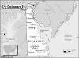

Delaware

Attention: If you use this or any of the AIRS lists in any state, please report any bad phone numbers or emails to the webmaster. This is the responsibility of all users, including you. Thank you!
eric eisenberg
EMAIL: vwcc_at_verizon_dot_net
CROSSROADS: 495 -edgemore -gov.printz
CITY: wilmington, 19809 PHONE: 302 765 2989
VW'S: 60 pannel -66 13 window - 4 93 eurovans
COMMENTS: im a vw freak (vw shop owner) ive broken down out there i know what
its like.
AVAILABLE: 9am to 9pm
I am familiar with: 25hp, 36hp, Bastard40hp, 1200, 1300, 1500, 1600, 1776+, dual
carbs, fuel injection, type4 engine, wasserboxer, diesel, conversions
I CAN PROVIDE THE FOLLOWING SERVICES:
INTERNET ACCESS
TELEPHONE ACCESS
TRANSPORTATION HELP
MECHANICAL HELP
SPACE TO WORK ON BUS
SOME PARTS
COFFEE/TALK
CAMPING: 2 nights SPARE ROOM: none
Favorite beer type: I don't drink
David Parsons
EMAIL: bugnut1_at_comcast_dot_net
CROSSROADS: RT. 54 & Rt. 13
CITY: Delmar, 19940 PHONE: (410)430-8728
AVAILABLE: anytime
I am familiar with: 36hp, Bastard40hp, 1200, 1300, 1500, 1600, 1776+, type4
engine, diesel
I CAN PROVIDE THE FOLLOWING SERVICES:
INTERNET ACCESS
TOOLS
TELEPHONE ACCESS
TRANSPORTATION HELP
MECHANICAL HELP
SPACE TO WORK ON BUS
STORAGE SPACE
SOME PARTS
COFFEE/TALK
CAMPING: 4 nights or more SPARE ROOM: 1 night
Favorite beer type: Anything cold
Karl Ploessl
(ploessl@sunmac.spect.upenn.edu)
Wilmington, 19806 PHONE: (302)777-5398
VW'S: 81 Westy
AVAILABLE: evenings
familiar with: type4 engine
I CAN PROVIDE THE FOLLOWING SERVICES:
INTERNET ACCESS
TELEPHONE ACCESS
TRANSPORTATION HELP
COFFEE/TALK
Favorite beer type: Anything cold
Joe
(gumbo@magpage.com)
CROSSROADS: Walther Road & Old Balt Pike
CITY: Newark PHONE: 302-369-0414
VW'S: 1971 Campmobile
COMMENTS: Newcastle is the best beer!
AVAILABLE: everyday after 5PM
I CAN PROVIDE THE FOLLOWING SERVICES:
INTERNET ACCESS
TELEPHONE ACCESS
TRANSPORTATION HELP
SPACE TO WORK ON BUS
COFFEE/TALK
CAMPING SPOT: 1 night
Favorite beer type: Thick and chewy
Todd Stanley
EMAIL: trapmail_at_comcast_dot_net
CROSSROADS: S. State St. & Rt.10
ZIP CODE: 19934
PHONE: 302-698-0786
VW'S: 71 Westy, 71 Beetle Convertible
AVAILABLE: anytime, leave a message
I am familiar with: 1600
I CAN PROVIDE THE FOLLOWING SERVICES:
INTERNET ACCESS
TOOLS
TELEPHONE ACCESS
TRANSPORTATION HELP
MECHANICAL HELP
SPACE TO WORK ON BUS
STORAGE SPACE
SOME PARTS
COFFEE/TALK
CAMPING: 2 nights SPARE ROOM: none
Favorite beer type: I don't drink
Ben
EMAIL: ben_dot_salin_at_magnumelectronics_dot_com
CROSSROADS: Rt. 13 / Rt. 10
CITY: Camden, 19934 PHONE: 302-233-3849
VW'S: 1973 Type II
I am familiar with: Bastard40hp
I CAN PROVIDE THE FOLLOWING SERVICES
INTERNET ACCESS
TOOLS
TELEPHONE ACCESS
TRANSPORTATION HELP
COFFEE/TALK
CAMPING: 1 night
SPARE ROOM: none
Favorite beer type: Room temp will
Roo & George
EMAIL: Roosieyo_at_aol_dot_com
CROSSROADS: I-495 &Philadelphia Pike
CITY: Claymont, 19703
ONLY CALL IF EMERGENCY PHONE: 302 792 0694
VW'S: 1970 VW Campmobile Type 2
COMMENTS: Coffee & breakfast anytime.
AVAILABLE: Most anytime.
I am familiar with: 1600
I CAN PROVIDE THE FOLLOWING SERVICES
INTERNET ACCESS
TOOLS
TELEPHONE ACCESS
TRANSPORTATION HELP
COFFEE/TALK
CAMPING: 1 night SPARE ROOM: 1 night
gm
EMAIL: gmatta-at-yahoo_dot_com
CROSSROADS: I95,896
CITY: Newark, 19711 PHONE: 302-738-0579
VW'S: 71 Westy
COMMENTS: Had a 70, and a 72 camper, since 1980. Currently running a 71
Westy with a all new 1600 stock oem VW engine (Mexico). I just finished
replacing a 1776cc Bernie Bergman lemon. (15,000 miles and boom!) Plenty of used
1776 parts...;-)
AVAILABLE: 5 to 8 pm, and weekends, if I'm not farfignugen
I am familiar with: 1600, 1776+, dual carbs, conversions
I CAN PROVIDE THE FOLLOWING SERVICES
INTERNET ACCESS
TOOLS
TELEPHONE ACCESS
TRANSPORTATION HELP
MECHANICAL HELP
SPACE TO WORK ON BUS
SOME PARTS
COFFEE/TALK
CAMPING: none SPARE ROOM: 4 nights or more
Favorite beer type: Anything cold
PUGS
EMAIL: mccreary1_at_verizon_dot_com
CROSSROADS: DE. RT 1 & DE RT 26
CITY: OCEAN VIEW, 19970
ONLY CALL IF EMERGENCY PHONE: 302 841 9095
VW'S: 1972 TRANSPORTER, 1967 SINGLE CAB
AVAILABLE: DAILY 7:00 A.M. > 9:00 P.M.
I am familiar with: 1500, 1600, dual carbs
I CAN PROVIDE THE FOLLOWING SERVICES
INTERNET ACCESS
TOOLS
TELEPHONE ACCESS
TRANSPORTATION HELP
MECHANICAL HELP
SPACE TO WORK ON BUS
CAMPING: 2 nights SPARE ROOM: none
Favorite beer type: Light and Airy
Doug
EMAIL: dugski_at_mchsi_dot_com
CROSSROADS: Rt. 20 and Rt 54
CITY: Selbyville, 19975 PHONE: 443-880-6203
VW'S: 73 Ghia Cabriolet
COMMENTS: Currently finishing up Restoration. Avid Skier, Pinball collector, Cyclist.
AVAILABLE: Salesman, always in Ocean City, MD.
I am familiar with: 1600
I CAN PROVIDE THE FOLLOWING SERVICES
INTERNET ACCESS
TOOLS
TELEPHONE ACCESS
TRANSPORTATION HELP
SPACE TO WORK ON BUS
COFFEE/TALK
CAMPING: none SPARE ROOM: none
Favorite beer type: Thick and chewy
Larry Visnic
EMAIL: larry_dot_visnic_at_gmail_dot_com
CROSSROADS: I-95, I-495
CITY: Wilmington, 19802
ONLY CALL IF EMERGENCY PHONE: 302-299-3731
VW'S: 1970 KG Cabriolet
AVAILABLE: Weekends
I am familiar with: 1600, wasserboxer
I CAN PROVIDE THE FOLLOWING SERVICES
TOOLS
TELEPHONE ACCESS
TRANSPORTATION HELP
MECHANICAL HELP
SOME PARTS
CAMPING: none SPARE ROOM: none
Favorite beer type: Room temp will do.
Kurt & Ann Mezger / Vintage Performance
EMAIL: turbo68vw_at_atlanticbb_dot_net and or vintageperformance_at_atlanticbb_dot_net
CROSSROADS: Rt. 1 I95 Rt13 Rt 301 Rt 9
CITY: Clayton / Dover, 19938 PHONE: 302-653-4269
VW'S: '62 Bug '66 Bug '68 Bug '71 Ghia '77 Vert '86 Jetta Diesel '02 Jetta TDI
COMMENTS: Can help with any VW air or water cooled. Tools, Welders, Lift, & extensive knowledge of all things VW. Can also help with non-VW vehicles & offer towing service if needed. In addition to the engines listed below, we're also very familiar with high performance engines.
AVAILABLE: Anytime for emergency / All others call first.
I am familiar with: 25hp, 36hp, Bastard40hp, 1200, 1300, 1500, 1600, 1776+, dual carbs, fuel injection, type4 engine, wasserboxer, diesel, conversions
I CAN PROVIDE THE FOLLOWING SERVICES:
INTERNET ACCESS
TOOLS
TELEPHONE ACCESS
TRANSPORTATION HELP
MECHANICAL HELP
SPACE TO WORK ON BUS
STORAGE SPACE
SOME PARTS
COFFEE/TALK
CAMPING: 3 nights SPARE ROOM: 3 nights
Favorite beer type: Beer is for wimps!
Matty
EMAIL: slammedtiki74_at_yahoo_dot_com
CROSSROADS: rt.896,rt40&I95
CITY: Newark, 19702
VW'S: 74 RATROD GHIA
COMMENTS: INTO VW'S, DOGS, AND FAMILY
AVAILABLE: EARLY EVENINGS AND WEEKENDS
I am familiar with: 1600
I CAN PROVIDE THE FOLLOWING SERVICES
INTERNET ACCESS
TOOLS
TELEPHONE ACCESS
TRANSPORTATION HELP
SPACE TO WORK ON BUS
COFFEE/TALK
CAMPING: none SPARE ROOM: 2 nights
Favorite beer type: Beer is for wimps!
Brian
EMAIL: Onecelt70_at_yahoo_dot_com
CROSSROADS: I95, Rt 202
CITY: Wilmington, 19805 PHONE: 302 981 8978
VW'S: 1976 Type II Bus
COMMENTS: Just got a bus on Thursday night. Have a lot to learn.
AVAILABLE: Weekends Only
I CAN PROVIDE THE FOLLOWING SERVICES
INTERNET ACCESS
TELEPHONE ACCESS
TRANSPORTATION HELP
SPACE TO WORK ON BUS
COFFEE/TALK
CAMPING: none SPARE ROOM: 1 night
Favorite beer type: Anything cold
Brian
EMAIL: dubpower_at_msn_dot_com
CROSSROADS: exit 3 on 95, 273 and Old Baltimore Pike
CITY: Newark ZIP CODE: 19702
PHONE: 302.437.4469
ONLY CALL IF EMERGENCY
VW'S: 77 Westfalia (w/ FI), 88 Jetta (Digifant)
AVAILABLE: Mon-Fri after 5pm.
I am familiar with: fuel injection, type4 engine
I CAN PROVIDE THE FOLLOWING SERVICES
INTERNET ACCESS
TOOLS
MECHANICAL HELP
SPACE TO WORK ON BUS
CAMPING: none SPARE ROOM: none
Favorite beer type: Anything cold
{kind=link}